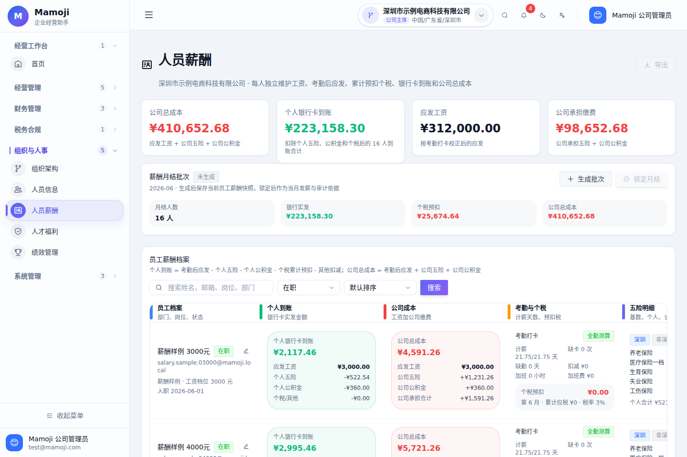
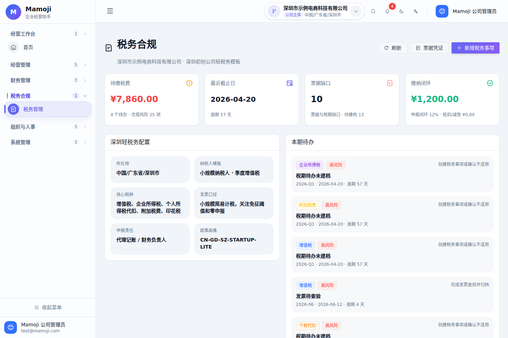
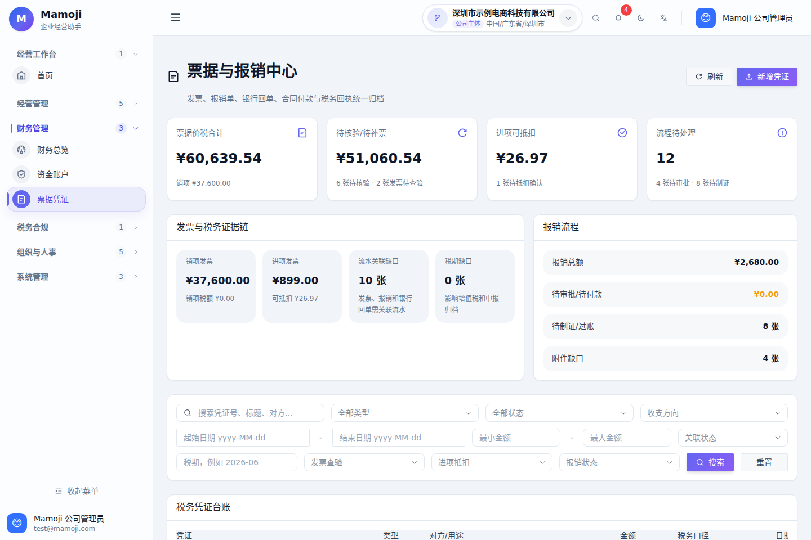

小团队经营数据常常散在多个工具里
收入、成本、报销、税务、薪酬和人员变化之间存在天然关联，但很多初创团队会把它们拆散在表格、记账工具、聊天记录和文件夹里。Mamoji 的目标是把这些经营对象统一成可查询、可预警、可审计的轻量系统。
收入、成本、报销、税务、薪酬和人员变化之间存在天然关联，但很多初创团队会把它们拆散在表格、记账工具、聊天记录和文件夹里。Mamoji 的目标是把这些经营对象统一成可查询、可预警、可审计的轻量系统。
前端使用 Next.js、React、TypeScript 和 Arco Design 构建后台工作台；后端使用 Java 21、Spring Boot、Spring JDBC 和 Actuator 提供业务 API；数据落 PostgreSQL，附件走 MinIO，并配套 Docker Compose、Caddy、Prometheus、备份恢复和冒烟脚本。




收入、成本、利润、预算、现金流、风险提醒和经营优先级统一呈现。
资金账户、经营流水、预算执行、票据凭证、附件归档和报销流程互相关联。
以深圳初创团队轻税务模板组织税种、税期、资料缺口和合规风险提醒。
员工档案、部门岗位、入离职事件、薪酬月结、五险一金和个税预扣。
角色、权限、公司主体范围、关键对象操作记录和敏感数据访问边界。
Docker Compose、PostgreSQL、MinIO、Caddy、Prometheus、备份恢复和 smoke scripts。
经营、财务、税务、HR 和系统管理模块组成统一后台，支持公司主体切换和角色化入口。
后端承载认证、权限、经营流水、预算、税务、票据、员工、薪酬、审计和通知接口。
结构化经营数据写入 PostgreSQL，发票、合同、回单等附件进入 MinIO 私有 bucket。
Caddy 承接生产入口，Prometheus 观测后端健康，备份、恢复、发布和冒烟脚本保障投产。
http://localhost:33000 前端可访问，并可使用演示管理员进入工作台。http://localhost:38080/actuator/health 返回 status: UP。完善多公司主体隔离、地区政策版本、公司级覆盖项和跨公司合并经营报表。
围绕报销、付款、预算调整、入职、离职建立更完整的审批流和审计追踪。
把经营报表、税务缺口、预算风险和现金流预测沉淀为可查询、可解释的经营数据 Agent。